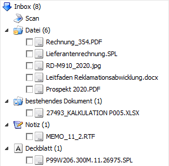
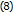
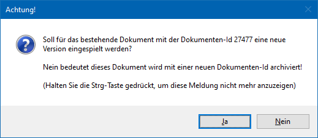

Unter "Inbox" werden alle neuen Archiveinträge dargestellt, wobei es mehrere Varianten des Hinzufügens gibt. Je nach Art der Herkunft werden die Einträge in den Ordnern "Scan", "Datei", "bestehendes Dokument", "Notiz" oder "Deckblatt" dargestellt.
Hinweis
Grundsätzlich ist es möglich einen neuen Eintrag zwischen den unterschiedlichen "Inbox"-Bereichen per Drag & Drop zu verschieden. Des Weiteren können die Einträge auch in den Bereich "Archiv - Suchstrategien" verschoben werden, welches eine automatische Vorbelegung bzw. Ergänzung der Beschlagwortung zur Folge hat (nähere Informationen entnehmen Sie bitte dem Kapitel Neuer Archiveintrag - Bereich "Archiv - Suchstrategien").

Ø Inbox
Unter "Inbox" werden die einzelnen Bereiche des Archiveingangs aufgeführt. Folgende Funktionen bzw. Informationen stehen dabei zur Verfügung:
ü

- Anzahl
ü
- Auswahl
Vor jedem
Archivdokument wird eine Checkbox zur Verfügung gestellt. Über diese kann
definiert werden, welche
Dokumente bei Anwahl des Buttons "Klammern" geklammert oder bei dem Button
"Eintrag löschen" gelöscht werden soll.
Ø Scan
Unter dem Bereich "Scan" werden automatisch alle Dokumente angezeigt, die per Button "Dokument einscannen" übergeben wurden.
Ø Datei
In dem Bereich "Datei" werden automatisch alle Dokumente / Dateien angezeigt, die per Button "neuer Archiveintrag" oder per "Drag & Drop" übergeben wurden.
Ø bestehendes Dokument
Wenn es sich um ein Archivdokument zu einem bestehenden Archiveintrag handelt, dann wird dieses Dokument automatisch in der Baumstruktur unter dem Bereich "bestehendes Dokument" ausgewiesen. Diese Zuordnung findet in folgenden Situationen statt:
ü Das Dokument wurde zuvor im Programmbereich "Archiveintrag suchen" über den Button "Dokument zum Bearbeiten extrahieren" extrahiert.
ü In den "Archiv-Parametern" wurde die Option
"Archivimport: numerische Dateinamen als Dokumenten-Id verwenden" aktiviert und die entstehende
Dokumenten-Id ist bereits im Archiv vorhanden. Zusätzlich erscheint in diesem
Fall folgender Hinweis:

Hinweis
Der Bereich "bestehendes Dokument" existiert in der Baumstruktur nur, wenn es ein darin zugeordnetes Dokument gibt.
Achtung
Sobald das Dokument per Drag & Drop aus dem Bereich "bestehendes Dokument" in einen anderen Bereich (z.B. "Datei" oder "Suchstrategie") verschoben wird, verliert das Dokument die Zuordnung zu dem bereits existierenden Archiveintrag.
Ø Notiz
Sobald der Fokus im Bereich "Notiz" liegt, kann per Anwahl des Buttons "neuer Archiveintrag" eine Notiz erfasst und nach abspeichern auch beschlagwortet werden.
Hinweis
Die Notiz erhält beim Abspeichern automatisch den Dateinamen "MEMO_Benutzernummer_fortlaufendeNummer.RTF".
Ø Deckblatt
Wenn der Fokus in dem Bereich "Deckblatt" liegt und der Button "neuer Archiveintrag" gedrückt wird, dann kann über ein Formular ein eigenes Deckblatt für andere Archiveinträge geschaffen werden. Hierzu stehen z.B. die Felder "Titel", "Version" und "Beschreibung" zur Verfügung. Eine Beschlagwortung ist nach Abspeicherung des Deckblattes ohne weiteres möglich.
Hinweis
Das Deckblatt erhält beim Abspeichern automatisch den Dateinamen "P99W206.Mandatennummer.Benutzernummer.fortlaufendeNummer.SPL".